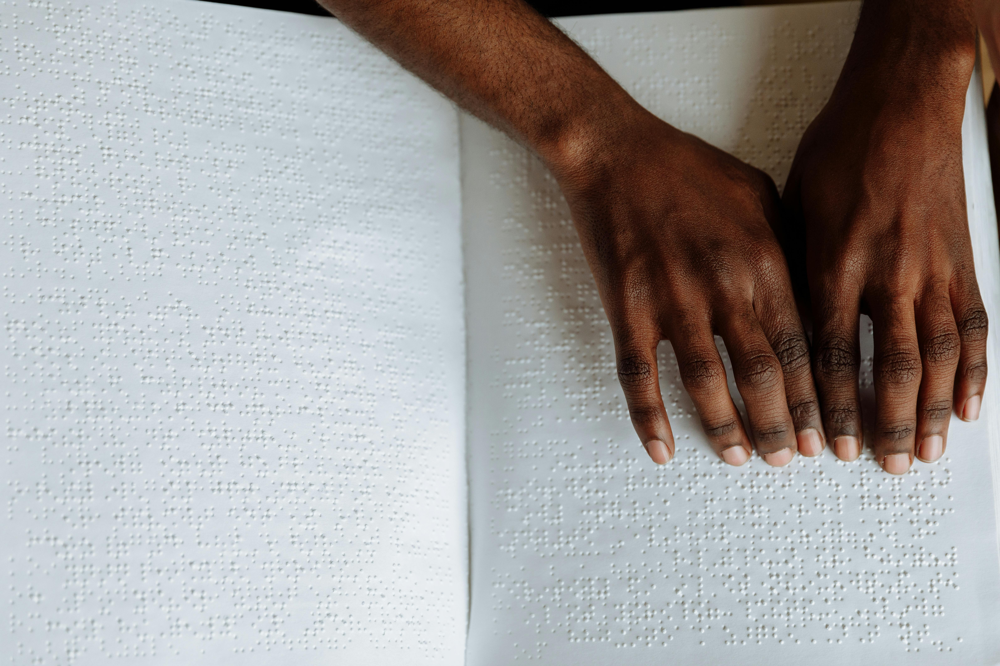

Introduction
Our senses are the gateways to the world around us. They help us perceive, process, and respond to the vast array of stimuli that bombard us every day. From the vibrant colors of a sunset to the sweet aroma of freshly baked cookies, our senses work together to create a rich and immersive experience.
Sensory Perception
Sensory perception is the process by which our senses detect and interpret the information from the environment. It is a complex process that involves multiple stages, from the initial detection of stimuli to the final interpretation of the information. Our senses are capable of detecting a wide range of stimuli, from the faintest sound to the brightest light.
The process of sensory perception begins with the detection of stimuli by our senses. For example, when we see an object, the light from the object enters our eyes and is detected by the photoreceptors in the retina. The signal is then transmitted to the brain, where it is processed and interpreted. The brain uses past experiences and expectations to help interpret the information and create a perception of the world.
Sensory perception is not just a passive process, but an active one. Our brains are constantly processing and interpreting the information from our senses, and we can influence this process through our attention and expectations. For example, if we are expecting to see a certain object, we are more likely to perceive it, even if it is not actually there.
Sensory Processing
Sensory processing is the process by which our brains interpret and make sense of the information from our senses. It is a complex process that involves multiple stages, from the initial detection of stimuli to the final interpretation of the information. Our brains use past experiences and expectations to help interpret the information and create a perception of the world.
The process of sensory processing begins with the transmission of signals from our senses to the brain. The signals are then processed in different parts of the brain, depending on the type of information. For example, visual information is processed in the visual cortex, while auditory information is processed in the auditory cortex.
Once the information is processed, it is interpreted and made sense of by the brain. This involves the use of past experiences and expectations to help create a perception of the world. For example, if we see a certain object, our brain uses past experiences to help us recognize it and understand its significance.
Sensory processing is not just a passive process, but an active one. Our brains are constantly processing and interpreting the information from our senses, and we can influence this process through our attention and expectations. For example, if we are expecting to see a certain object, we are more likely to perceive it, even if it is not actually there.

Sensory Integration
Sensory integration is the process by which our brains combine information from multiple senses to create a unified perception of the world. It is a complex process that involves the integration of information from different senses, such as sight, sound, touch, taste, and smell.
The process of sensory integration begins with the detection of stimuli by our senses. The signals are then transmitted to the brain, where they are processed and interpreted. The brain uses past experiences and expectations to help interpret the information and create a perception of the world.
Once the information is processed, it is integrated with information from other senses to create a unified perception of the world. For example, when we see an object, our brain uses information from our sense of sight to recognize it, but it also uses information from our sense of touch to understand its texture and shape.
Sensory integration is not just a passive process, but an active one. Our brains are constantly processing and interpreting the information from our senses, and we can influence this process through our attention and expectations. For example, if we are expecting to see a certain object, we are more likely to perceive it, even if it is not actually there.

Gallery
Here are some images that showcase the wonder of the human senses.